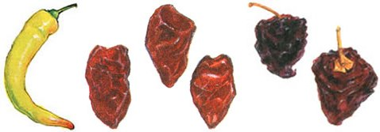

(LEFT) Banana: These crisp, pale yellow to orange-red peppers range from mild to slightly hot and are easy to grow. Like the Anaheim, they can be used as you would a sweet pepper. Both peppers add variety and color to your favorite summer dishes. (MIDDLE) Chipotle: This is a smoked and dried jalape?o, which is usually found canned at the Mexican grocery or in the imported foods aisle. Chipotles add a rich, smoky flavor to salsas and sauces. (RIGHT) Ancho: This is a smoked and dried poblano, which transforms it into a brownish wrinkled chili. It can be found in Latino grocery stores and is rehydrated to make sauces and soups, giving dishes a smoky flavor.